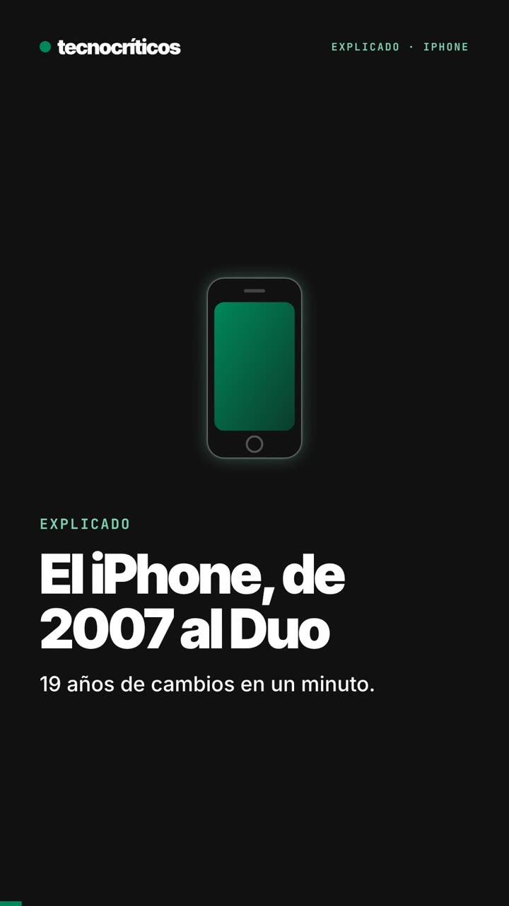
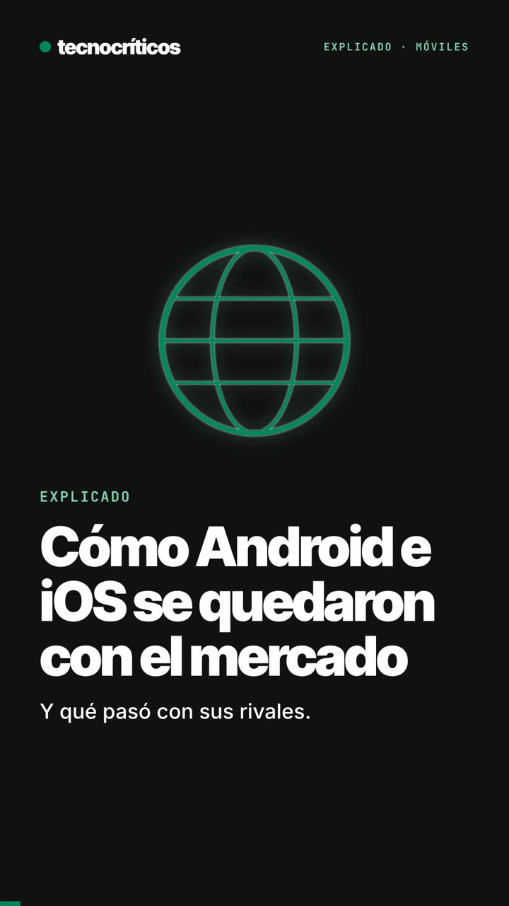
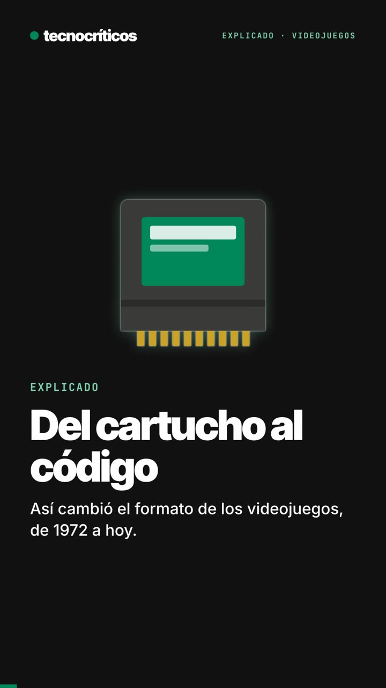

Videojuegos y series · 24/11
Multimedia · Tecnocríticos
Explicado en imágenes
La tecnología en un minuto: videos verticales e infografías con datos verificados y fuentes. Míralos aquí, descárgalos y compártelos citando a Tecnocríticos.
● Estreno · Videojuegos y series
Spotify, Apple Music, YouTube Music, Deezer, Tidal y Amazon: qué app de música te conviene
Precio en Colombia, plan gratis, calidad de sonido y lo que trae cada una, en un video y una infografía.
Videos
5 piezas · formato vertical
81 s
85 s
80 sVideojuegos y series · 24/11
Del cartucho al código: la historia de los formatos de los videojuegos
↓ DescargarIA y tecnología · 23/11
Nvidia devuelve a Jensen Huang la dirección, dos semanas después de su renuncia
↓ DescargarInfografías
2 piezas
Videojuegos y series · 24/11
Spotify, Apple Music, YouTube Music, Deezer, Tidal y Amazon: qué app de música te conviene
↓ Descargar
IA y tecnología · 23/11